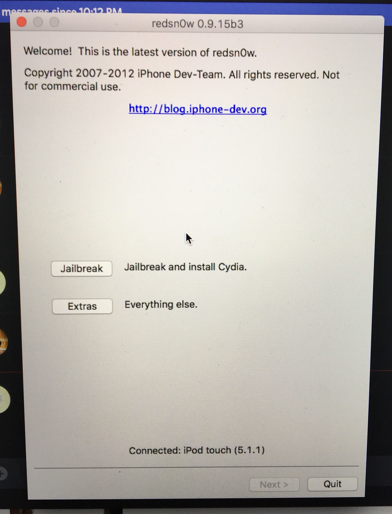

I was originally going to trade in my old iPod 3G, but none of the places I wanted to take it would give me good money for it (which is entirely understandable, it's a ridiculously old model and hardly works anymore). I was going to take it apart to see the guts and glory, until my friend suggested that I load Linux onto it!
Now, finding a resource to do so is really hard, and I haven't found one that works so far. But I have successfully jailbroken the iPod, which is super cool in and of itself.
Before this, I'd never heard of jailbreaking. It's a way of removing software restrictions that Apple places on the device, so you can do things you wouldn't usually be able to do on an un-jailbroken device. It gives you root access to the OS files and you can download things that you couldn't normally get on the App Store.
I followed this tutorial, but thought I'd go through it here as documentation as well.
First, you plug the iPod into your computer. If you have data on it that you want to save, make sure to back it up. I did this all on OSX (reasons below).
Here are all the disclaimers and warnings from that tutorial:
You can download the zip file from http://www.iphonehacks.com/download-redsn0w.
I thought it was a super sketch website at first and was skeptical of whether or not to download it, but I decided otherwise. After unzipping it, double click on the application. It looks something like this:

If the iPod is connected, you should see that redsnow recognizes it at the bottom. Click on "jailbreak and install cydia", and the process should complete in little time!
Make sure to wait for the iPod to reboot before unplugging it. Then search for Cydia to appear in the apps (you can use search to find it), then wait a little longer for a second reboot before unplugging and using. You should be all set!
{thallia}